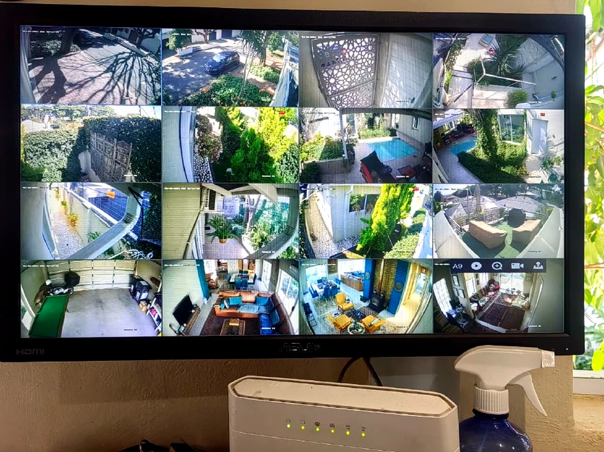
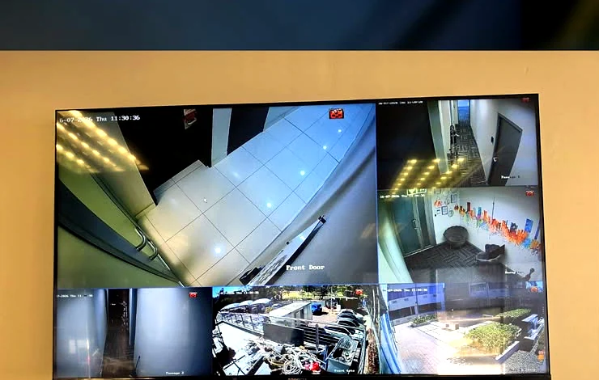

New CCTV installations
Camera positioning, equipment setup, cabling and system testing for residential, business and specialist sites.
RONMAXAKS installs, services and supports CCTV systems for homes, businesses and specialist sites in Johannesburg and Soweto, with practical camera placement, cabling, DVR/NVR setup, monitoring and maintenance.
A useful CCTV system starts with the areas that actually need coverage. RONMAXAKS checks the site, camera positions, cable routes, recording equipment and monitoring requirements before final testing and handover.

RONMAXAKS supports the system beyond simply mounting a camera.
Camera positioning, equipment setup, cabling and system testing for residential, business and specialist sites.
Recording equipment setup and connection so cameras can be viewed and recordings can be managed properly.
Testing, servicing and practical troubleshooting for existing CCTV systems that need attention.
Structured security cabling and network support where CCTV equipment depends on clean, reliable connectivity.
Coverage points, cable routes, equipment positions and access requirements are checked.
Cameras, cabling, recording equipment and related devices are installed around the agreed requirements.
The system is checked for camera views, recording and practical operation before handover.
RONMAXAKS also handles servicing, maintenance and fault finding when systems need attention later.
The RONMAXAKS website includes original field photos and technician videos covering CCTV, access control, networking, alarms and other security work. You can inspect the project evidence before requesting a quote.

RONMAXAKS is based in Meadowlands West, Soweto and provides security installation and support work across Johannesburg, Gauteng and other South African sites where the project requires it.
For a CCTV installation enquiry, send the site details through the quote form or WhatsApp. The team can then discuss the cameras, coverage areas, existing equipment and work required instead of guessing from a generic package.
Yes. Johannesburg and Soweto are part of the areas RONMAXAKS serves for CCTV and related security work.
Yes. CCTV servicing, testing, maintenance and fault finding are part of the company’s capability.
The published CCTV capability includes cameras, DVR/NVR recording, monitoring stations, cabling and related networking.
Use the contact form, WhatsApp 073 893 2997, call 073 893 2997 / 069 030 2709, or email rooneymaxaks@gmail.com.
Share the site and the work you need. RONMAXAKS can discuss the installation, servicing or fault-finding requirement from there.